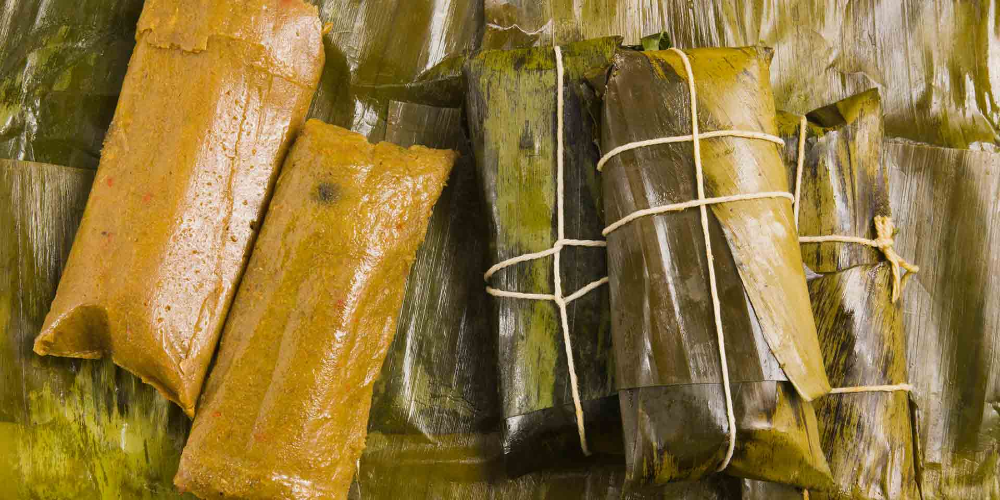

Home
Pasteles en Hoja
Historia y Cultura

Tradición Navideña
El pastel en hoja es el plato estrella de la Navidad dominicana. Aunque tiene parientes cercanos en la región (como el tamal o la hallaca), la versión dominicana destaca por su masa a base de tubérculos (plátano y víveres) y su envoltura en hojas de plátano. Es una herencia africana y taina que representa la unión familiar en las festividades.
Ingredientes
Para la Masa
- Plátanos verdes y maduros (mezcla para balancear el dulzor)
- Yautía blanca y amarilla (proporción 1:1)
- Auyama (para el color y suavidad)
- Leche evaporada
- Aceite de achiote (para dar el color naranja característico)
- Sal al gusto
Para el Relleno y Envoltura
- Carne de res o pollo (guisada y picadita)
- Hojas de plátano (mareadas por fuego para que no se rompan)
- Hilo de cocina (para amarrar)
- Papel encerado (para asegurar la forma)
Proceso de Preparación
1. Preparar la Masa
- Rallar: Pela y ralla finamente los plátanos, las yautías y la auyama.
- Mezclar: Agrega la leche, el aceite de achiote y la sal. Bate hasta que la mezcla sea homogénea y suave.
2. El Montaje
- Extender: Sobre un pedazo de papel encerado y una hoja de plátano, coloca una porción de masa y extiéndela.
- Rellenar: Añade una cucharada generosa de la carne guisada en el centro.
- Envolver: Dobla cuidadosamente para que la masa cubra el relleno, envuelve en la hoja y luego en el papel. Amarra con el hilo de cocina.
3. Cocción
- Hierve en abundante agua con sal durante unos 45 a 60 minutos. Sirve tradicionalmente con un poco de kétchup o picante.